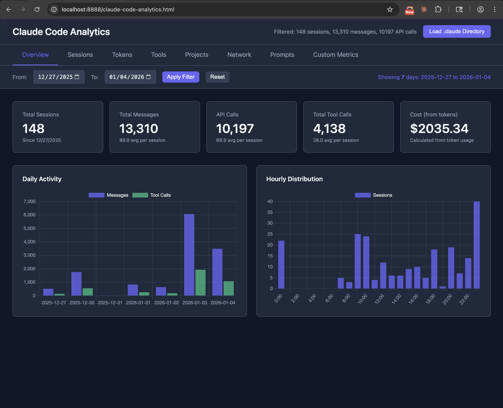

Overview
Dashboard Overview
At-a-glance metrics and activity charts

- Total sessions, messages, API calls
- Cost calculated from tokens
- Daily activity chart
- Hourly distribution
A local dashboard for analyzing your Claude Code usage data
All data stays local. Nothing is sent to any server. Simply load your ~/.claude directory and explore your usage patterns, token consumption, costs, and more.